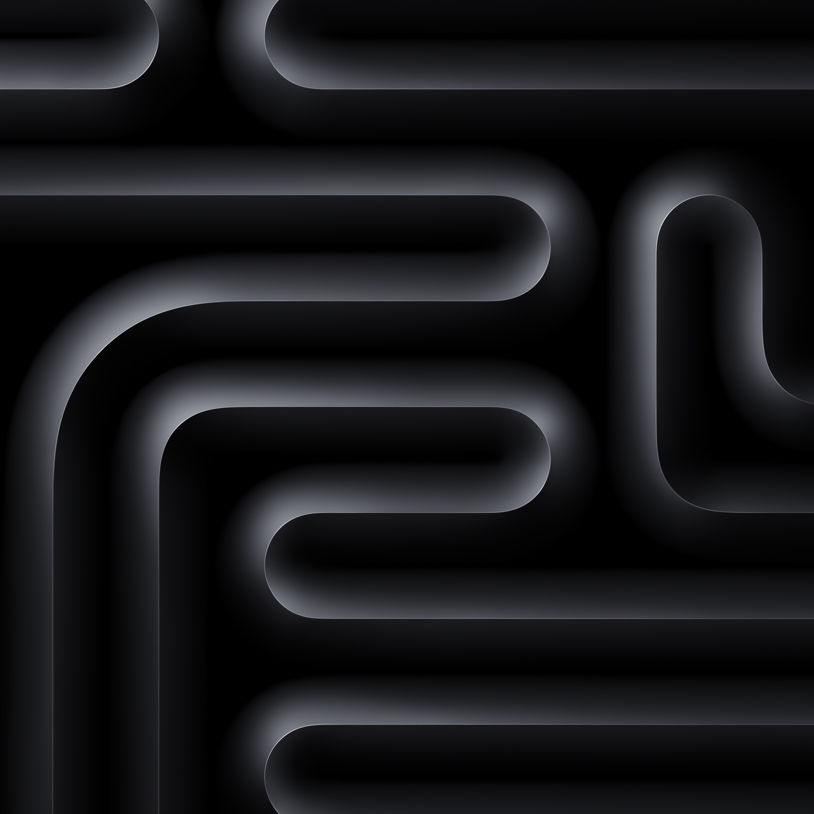

Five scroll techniques, shown on Northlight, a fictional photo editor for Mac. Scroll slowly, then fling, then scroll back up.
Word scrub. Each word lights as it crosses the band and dims again on the way back. Motion.wordScrub(el)
Northlight keeps every edit where you left it. Raw files stay on your Mac, versions stack quietly, and exports remember their settings, so Sunday sorting feels like finishing, not filing.
Smoothed progress. Progress chases the scroll with a soft lag. Motion.smoothProgress(section, p => …, { play })

0% through the print checklist
Timeline. The print rises and settles with scroll position. Motion.timeline(el, [{ at, style }])
Pro Black, 12 x 12Sunday set
Accent wipe. The highlight sweeps in once, then stays. Motion.accentWipe(el)
Finish the photo,
keep the afternoon.
Sheen. One light pass when first seen, never loops. Motion.sheen(el)